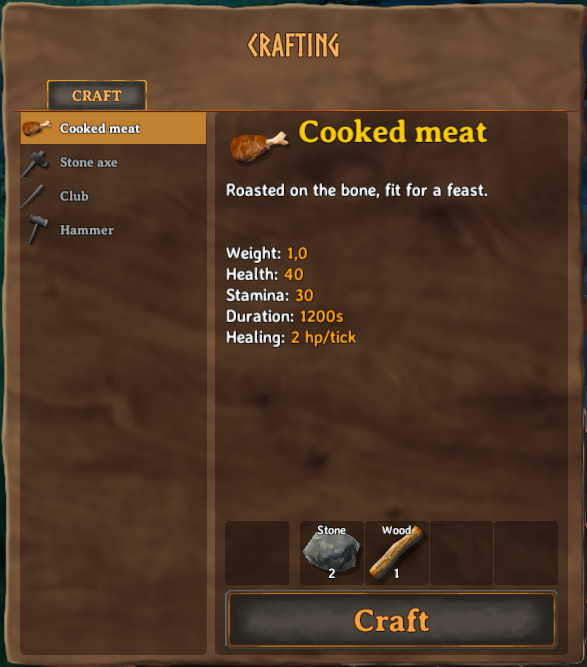
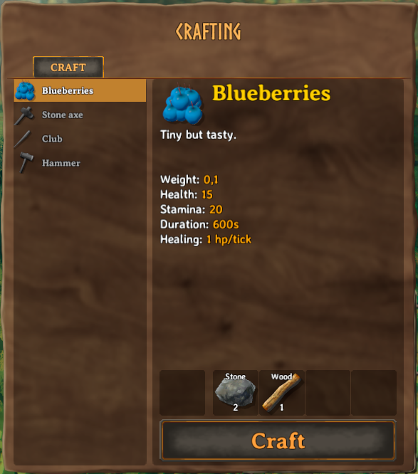

Recipes
Recipes in Valheim are coupling the items a player can craft to the various crafting stations. They also define if and at which cost items can be upgraded as well as the crafting station which can repair items. Creation of custom recipes is done through the ItemManager singleton class.
All recipes will always be loaded after all items.
However, recipes will be loaded in the order that you call the AddRecipe function.
You have three options for adding custom recipes in Jötunn:
- Use a RecipeConfig where you can define the ingame objects your recipe should reference via strings of the object names.
- Use a JSON file to define an array of RecipeConfig objects, then load them when your mod starts.
- Create the
RecipeScriptableObject on your own. If the game has already loaded it's own assets, you can reference the objects in the recipe via Jötunns Prefab Cache or create Mocks and let Jötunn fix the references at runtime.
These three approaches can be mixed and used as you please, as they will accomplish the same goal.
This example requires assets to be loaded. The code snippets are taken from our example mod.
Note
You must only use names of existing prefabs. This can be prefabs you created, that have already been registered by another mod, or that already exist in the game.
Adding a recipe using RecipeConfig
When you are loading your mod assets before Valheim loads it's vanilla assets into the game (in your Mods Awake() for example) you need to use the RecipeConfig class to create a custom recipe.
You define the referenced prefabs via their names by string, instantiate a CustomRecipe with that and let Jötunn resolve the correct references at runtime for you.
// Add custom recipes
private void AddRecipes()
{
// Create a custom recipe with a RecipeConfig
var meatConfig = new RecipeConfig();
meatConfig.Item = "CookedMeat"; // Name of the item prefab to be crafted
meatConfig.AddRequirement(new RequirementConfig("Stone", 2));
meatConfig.AddRequirement(new RequirementConfig("Wood", 1));
ItemManager.Instance.AddRecipe(new CustomRecipe(meatConfig));
}
Please take a look at the actual implementation of RecipeConfig for all properties you can set in the config.
Now we are able to craft ourself some CookedMeat from Stone and Wood (yum!):

Adding a recipe using JSON
First, we must create a JSON file which will keep an array of all the recipes we wish to add. This JSON file should contain an array of RecipeConfig objects (note, this must be an array). This can be done like so:
[
{
"Item": "Blueberries",
"Amount": 1,
"Requirements": [
{
"Item": "Stone",
"Amount": 2
},
{
"Item": "Wood",
"Amount": 1
}
]
}
]
Please take a look at the actual implementation of RecipeConfig for all properties you can set in the config.
Next, we need to tell Jötunn where our JSON file is. If the JSON file is not in an AssetBundle, we can load it like so:
// Add custom recipes
private void AddRecipes()
{
// Load recipes from JSON file
ItemManager.Instance.AddRecipesFromJson("TestMod/Assets/recipes.json");
}
Now we are able to craft ourself some Blueberries from Stone and Wood (yum!):
